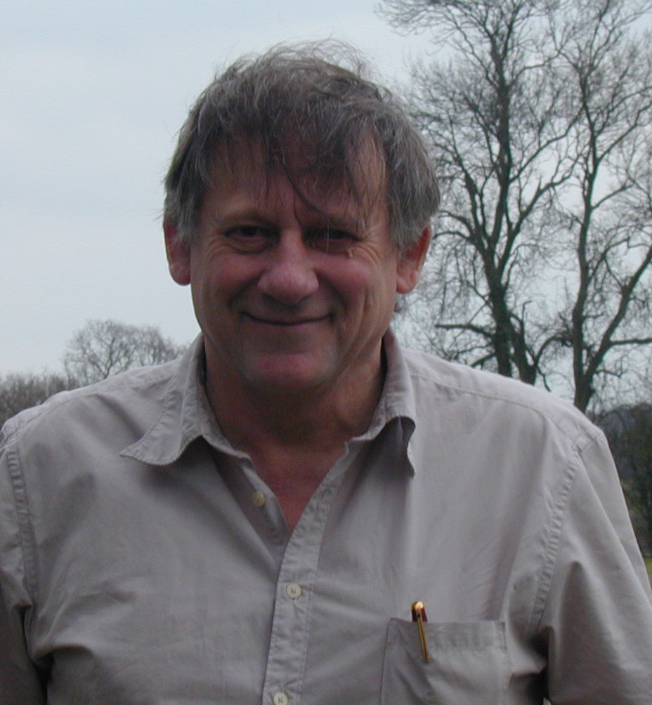

A glimpse of God in
matter
(November 1,
2005)

Christopher Alexander ties
together religion and architecture
(Photo: Maggie Moore)
Related
external information
Architect Christopher Alexander may have just succeeded in
doing what philosophers back to Thomas Aquinas and Aristotle have
eternally sought to do: find God through science. In his four-volume
work titled The Nature of Order, Alexander uses the
vocabulary of architecture and the empirical tools of a scientist to
discover the principles of what he calls “life.” Following his
30-year study of life and the universal human response to it,
Alexander illustrates his idea that matter must hold within it
something life-like — something God-like — which all humans
understand as a pleasing beauty and order.
A professor emeritus of architecture at University of
California, Berkeley, Alexander spoke recently with Science and
Theology News editorial intern Britt Peterson about the
importance of science and religion to architecture, and his
empirical search for the face of God in the physical world.
What were some of your first lessons and how did you come
up with the ideas you’re writing about today?
I was astonished by the intellectual poverty of architecture as
it was taught to me in the late 50s. It made me quite sick actually,
and I have spent the rest of my life trying to work out what
architecture actually is. I’m a practicing architect and I build a
lot of stuff, so I wanted to know what it was all about. I began
thinking about that when I was [a graduate student] at Harvard and
really haven’t stopped to this day.
What was the impetus to write your latest book, The
Nature of Order?
My first intention was simply to set down a coherent picture of
what architecture is, so it wasn’t some sort of technical thesis but
something that really dealt with the heart of the matter.
Originally, I had the whole thing expressed in a one-volume version.
As I gradually went on I found that I had to put in more and more
material to cope with the really quite drastic changes in thinking
that I had to make in order to make sense of the subject.
The Nature of Order took 30
years to write – how did your ideas change over that
time?
As I started to go into it, I began to discover that there were
certain kinds of structures in space that were responsible for what
really happens in art and in buildings. And these structures were
very difficult indeed to describe. They required rethinking the
nature of space in some form. And it was very difficult, hellishly
difficult. I kept coming up against what appeared to be
contradictions and found it very hard to construct a coherent
picture that took things into account as they are.
I realized almost from the beginning that one couldn’t make a
sensible picture of architecture without dealing with the feelings
buildings create, and that that also — in the rather positivist
atmosphere of the later 20th century — was quite difficult for
people to accept. There was a view at the time that feeling was a
wacky thing that had no place in a technical field.
Much of your architectural work, both theoretical and
practical, is very scientific, drawing on chaos theory, neuroscience
and the natural sciences. Do you consider yourself a scientist as
well as an architect?
I’d say that I do very much consider myself a scientist. I used
to work as a scientist when I was at Harvard, and I was trained in
mathematics. My wish always has been to try to write down
something that is coherent and true.
Now architecture is a very difficult field. The subject of what
makes buildings good or beautiful has been a no-no. It’s been
something that people in the profession have really not wanted to
deal with, both on the academic and the professional sides. And
especially not from the scientific point of view, to do justice to
the real issues that are involved when something is made – there’s
never been a scientific model of what that’s all about. There’s
never been a picture, other than a cartoonish one.
How has your religious background influenced your
architectural work?
I have always felt that the religious picture of the world was
probably more accurate than the scientific picture of the world
that’s evolved over the past few hundred years. I was raised as a
Catholic, and as a child I spent a great deal of time bicycling
around England looking at country churches. But that wasn’t
particularly what was forming my views about architecture. It was
something different. As I got closer and closer to a picture of
things that had common sense and seemed to work, I discovered that I
felt more and more that the religious point of view — or a religious
point of view — is inevitable as an accurate description of matter,
if it is going to take into account the empirical facts about
architecture.
I gradually have come to the conclusion that the presence of God
in matter is inevitable. You can’t have a coherent picture that does
justice to all the facts unless you have something like that in your
mind. Exactly the form that does take, I won’t be the ultimate judge
of. But I do think it’s unavoidable.
How have your scientific and religious beliefs coalesced
over the years?
As the book evolved over the 30 years, I would say that religion
gradually became the most important issue for me. But I say that as
a scientist. I don’t particularly care for the firmly created divide
between science and religion. I am most uncomfortable with it.
I do believe that the nature of God is factual. I think it is
something that will be slowly understood better and better, that we
will ultimately have a view of the universe in which it’s explicit.
And as with other parts of science it will be wrong at first, and
then gradually get more clear.
Science has demonstrated that the search for truth in an
empirical way has enormous benefits for society. It gives us a view
where millions of people can share the view they have of the world
and learn about it together, and improve upon one another’s
observations and so forth. But I think the loony idea that God
is in one compartment and electrons are in the other is of very
little interest. It’s just an escape from confronting a very
difficult set of questions.
|